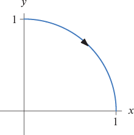

Section 4 Warm-up Set
Problem 4.1.

Problem 4.2.
Let \((\cos at, \sin at)\) be the position at time \(t\) seconds of a particle moving around a circle, where \(a\gt 0\text{.}\)
Problem 4.3.
Let \((a\cos t, a\sin t)\) be the position at time \(t\) seconds of a particle moving around a circle, where \(a\gt 0\text{.}\)